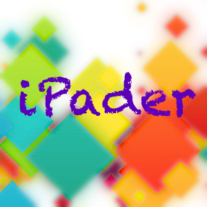

iPader
关于

这是一个兴趣驱动型交流及分享小站。主要涉足技术领域包括：产品开发，HTML5/JS，Swift语言，iOS/Android产品及应用，开源实验性项目。
项目
- 读了吗: 它是一款跨媒体网络图书馆应用。为主流文档（PDF, Word, PPT, ePub, Text, UMD, Google Books, RSS, HTML）提供统一的管理、阅读体验！
- 读了吗·稍后: 它是《读了吗》轻版应用，也是一款加强版“稍后阅读”。缺省附带的浏览器扩展应用加速访问效率。为博客、订阅、文章、网页提供电子书式阅读体验，以及排版精美的长微博制作、分享功能。
分享
- Swift语言指南 (持续更新中...)
- HTML5应用介绍 (2010/11/1)
文章
- 致 Swift 开发者 (2014-12-31)
- Google Glass: 未来不遥远 (2013-2-21)
- Apple：如此相得益彰 (2010-4-19)
- iPad：改变我们的生活习惯 (2010-3-27)
- iPad：谁为您的利益负责？ (2010-3-19)
- UED：Web应用我所见 (2010-3-14)
- iPad：实用来自云端 (2010-3-10)
- iPad：人机界面2.0 (2010-3-8)
- iPad：谁的奶酪？ (2010-3-3)
- iPad：触控的魅力 (2010-3-1)
- iPad：历史的车轮 (2010-2-22)
- iPad：如何捧着工作 (2010-2-19)
- iPad：最后的战场 (2010-2-11)
- iPad：原生应用还是Web应用？ (2010-2-5)
- iPad：企业应用前景展望（三） (2010-2-4)
- iPad：企业应用前景展望（二） (2010-2-2)
- iPad：企业应用前景展望（一） (2010-2-2)
- iPad：更真切地的认识它 (2010-1-31)
- iPad：回归理性的最佳设计 (2010-1-28)